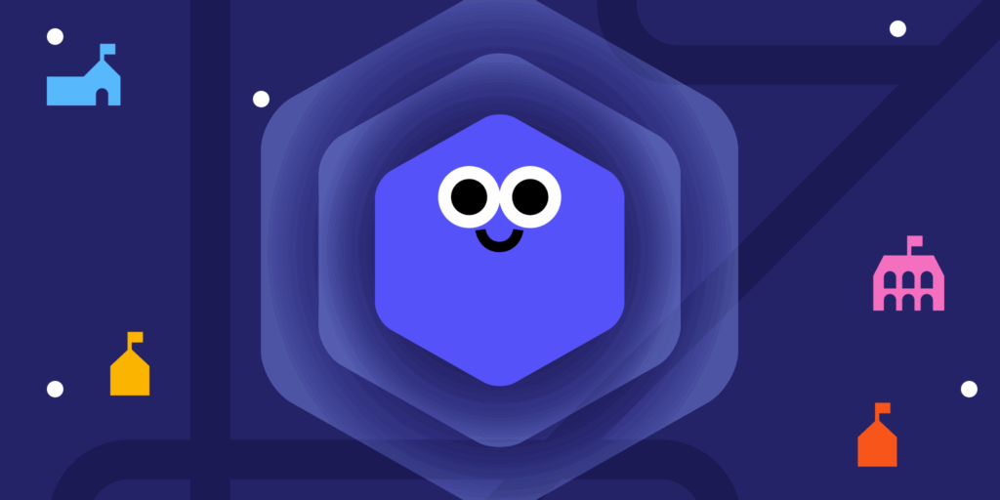

Plataforma de aprendizado geral, não só de programação, mas de diversas materias traduzidas para diversas linguagens
Página Principal
Multiplas Linguagens

Plataforma Gratuita

Vários conteúdos
Plataforma de aprendizado geral, não só de programação, mas de diversas materias traduzidas para diversas linguagens
Página Principal
Multiplas Linguagens
Plataforma Gratuita
Vários conteúdos
A Khan Academy é uma plataforma educacional online sem fins lucrativos que oferece conteúdos de aprendizagem em diferentes áreas do conhecimento. Entre seus conteúdos está a área de computação, que apresenta materiais voltados ao aprendizado de programação, ciência da computação e desenvolvimento de habilidades relacionadas à tecnologia.
Na área de programação, a plataforma disponibiliza conteúdos sobre linguagens e tecnologias como Python, JavaScript, HTML, CSS e SQL. Os assuntos são apresentados por meio de lições, explicações, desafios e projetos,
A Khan Academy também procura relacionar a programação a situações e problemas práticos. Em seus conteúdos de computação, o estudante pode utilizar programação para criar desenhos e animações, desenvolver jogos, trabalhar com páginas web, analisar dados e explorar conceitos relacionados a algoritmos. Essa abordagem permite compreender a programação não apenas como a escrita de código, mas como uma ferramenta para solucionar problemas e criar diferentes tipos de projetos.
Outro aspecto da plataforma é sua utilização no ambiente educacional. Professores podem utilizar os conteúdos e atividades como complemento às aulas, enquanto os estudantes podem realizar exercícios e acompanhar seu desenvolvimento de forma independente. Dessa maneira, a Khan Academy pode ser utilizada tanto para introduzir conceitos de programação quanto para reforçar conhecimentos já trabalhados em sala de aula.

O funcionamento da Khan Academy é baseado na disponibilização de conteúdos educativos organizados em diferentes áreas do conhecimento, incluindo a computação e a programação.
Durante os estudos de programação, o usuário pode encontrar conteúdos relacionados a tecnologias como Python, JavaScript, HTML, CSS e SQL, além de assuntos relacionados à ciência da computação, algoritmos e funcionamento da internet. Os conceitos são apresentados por meio de explicações acompanhadas de exemplos e atividades, permitindo que o estudante compreenda os fundamentos antes de aplicá-los em situações práticas.
Um dos aspectos presentes no aprendizado de programação da Khan Academy é a possibilidade de experimentar o código diretamente durante as atividades. Os conteúdos utilizam um ambiente interativo no qual o estudante pode escrever ou modificar códigos e observar os resultados produzidos. Essa abordagem permite testar diferentes possibilidades e compreender de forma mais concreta a relação entre os comandos utilizados e o comportamento do programa.
Além das explicações, a plataforma disponibiliza desafios, exercícios e projetos que incentivam o estudante a aplicar os conhecimentos adquiridos. As atividades podem envolver a criação de desenhos e animações, desenvolvimento de páginas web, construção de jogos e exploração de conceitos relacionados à programação. Dessa maneira, o aprendizado não fica limitado à leitura de conteúdos, permitindo que o usuário desenvolva seus conhecimentos por meio da experimentação e da resolução de problemas.
A Khan Academy também possui recursos voltados ao acompanhamento da aprendizagem, permitindo que estudantes avancem pelas atividades e acompanhem seu progresso. Para professores, a plataforma pode ser utilizada como complemento às aulas, possibilitando a indicação de conteúdos e atividades para os alunos. Dessa forma, seu funcionamento combina conteúdo explicativo, prática interativa e acompanhamento do aprendizado, podendo ser utilizado tanto para introduzir conceitos de programação quanto para reforçar conhecimentos já trabalhados em sala de aula.

A Khan Academy organiza seus conteúdos de forma progressiva, permitindo que o estudante desenvolva os conhecimentos gradualmente. As atividades podem partir de conceitos introdutórios e avançar para assuntos mais complexos, facilitando a construção de uma base antes da realização de tarefas que exigem maior domínio do conteúdo.
Os conteúdos de computação utilizam recursos interativos que permitem ao estudante experimentar conceitos de programação diretamente durante as atividades. A possibilidade de escrever, modificar e executar códigos ajuda a relacionar as explicações apresentadas com os resultados obtidos na prática.
A plataforma utiliza projetos como parte do aprendizado de programação, permitindo que os estudantes apliquem os conceitos estudados na criação de diferentes produções. Entre as atividades podem estar desenhos, animações, jogos e páginas web, proporcionando oportunidades para desenvolver conhecimentos por meio da experimentação e da criação.
Os conteúdos são acompanhados por desafios e atividades que permitem ao estudante praticar os conhecimentos adquiridos. Essas tarefas ajudam a reforçar conceitos de programação, estimular a resolução de problemas e verificar a compreensão dos assuntos trabalhados ao longo das lições.
A Khan Academy também oferece recursos que podem ser utilizados por professores no acompanhamento das atividades dos estudantes. Os educadores podem utilizar os conteúdos da plataforma como complemento às aulas, indicar atividades e acompanhar o desenvolvimento dos alunos, integrando os recursos digitais ao processo de ensino.
Para os estudantes, a Khan Academy oferece uma ampla variedade de recursos para aprender e praticar conteúdos de diferentes áreas do conhecimento, como matemática, ciências, programação, economia e computação. A plataforma disponibiliza aulas, explicações e atividades organizadas de acordo com diferentes níveis de dificuldade, permitindo que o estudante avance gradualmente conforme desenvolve seus conhecimentos.
A plataforma também oferece exercícios interativos, atividades práticas e sistemas de acompanhamento do progresso, que permitem ao estudante colocar em prática os conteúdos apresentados nas aulas. Esses recursos podem ser utilizados para revisar assuntos, identificar dificuldades e reforçar conhecimentos por meio da resolução de exercícios. A possibilidade de acompanhar o próprio desempenho também contribui para que o estudante tenha maior autonomia durante o processo de aprendizagem.
Para professores e educadores, a Khan Academy pode funcionar como um recurso complementar ao ensino, oferecendo ferramentas para acompanhar o desenvolvimento dos estudantes e identificar quais conteúdos precisam de maior atenção. Os educadores podem utilizar as atividades e exercícios da plataforma como parte de suas aulas ou como apoio para estudos e práticas realizadas fora da sala de aula.